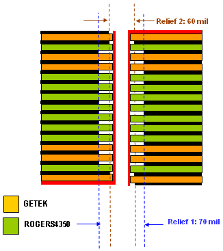
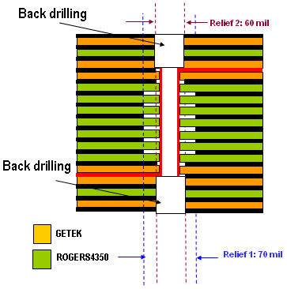
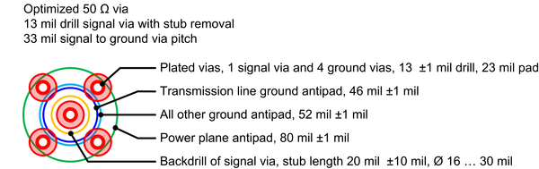

Inter-layer via examples
The following sections show two inter-layer transition via designs. Advantest optimized them for a 250 mil Rogers 4350/Getek stackup. Both designs can be used on different stackups without performance loss.
The first is a top to bottom inter-layer via, and the second is a via between two inner layers.
High-speed top to bottom inter-layer via

Like in the pogo via design (see Pogo via examples), the ground clearance (or ground swell) in this inter-layer design is reduced below or above the microstrip transition to reduce the discontinuity.
High-speed inner inter-layer via

Again, the ground clearance is reduced above and below the stripline transition, and the via stubs are back drilled.
Layout details for inter-layer vias
Both above via designs have pads only on the top and bottom layers. The ground vias are directly connected to the ground plane layers 1 through 6.
The via's outside diameter determines the high frequency performance. Therefore you must specify the drill size and not the "Finished Hole Size" (FHS) on the fabrication document.

Functional changes
- Introduced before SmarTest 6.3.2